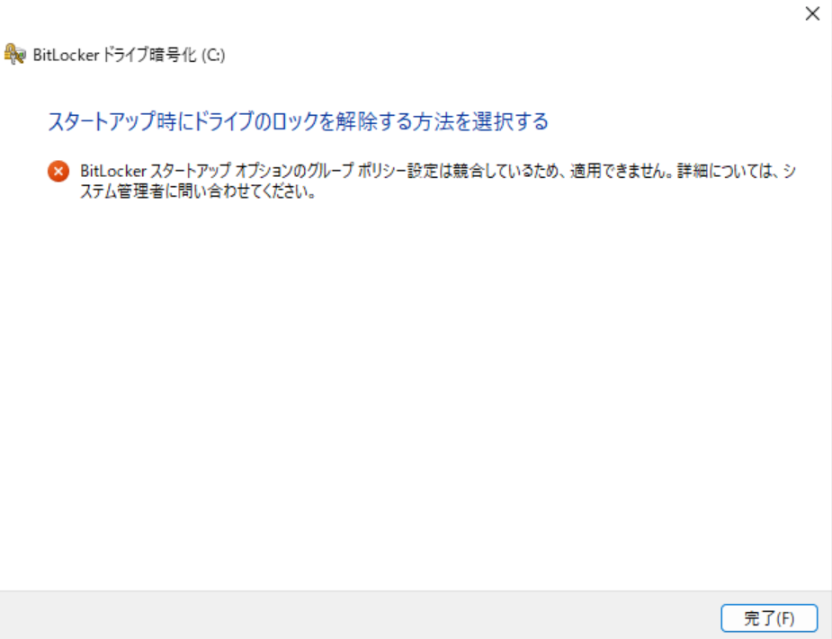
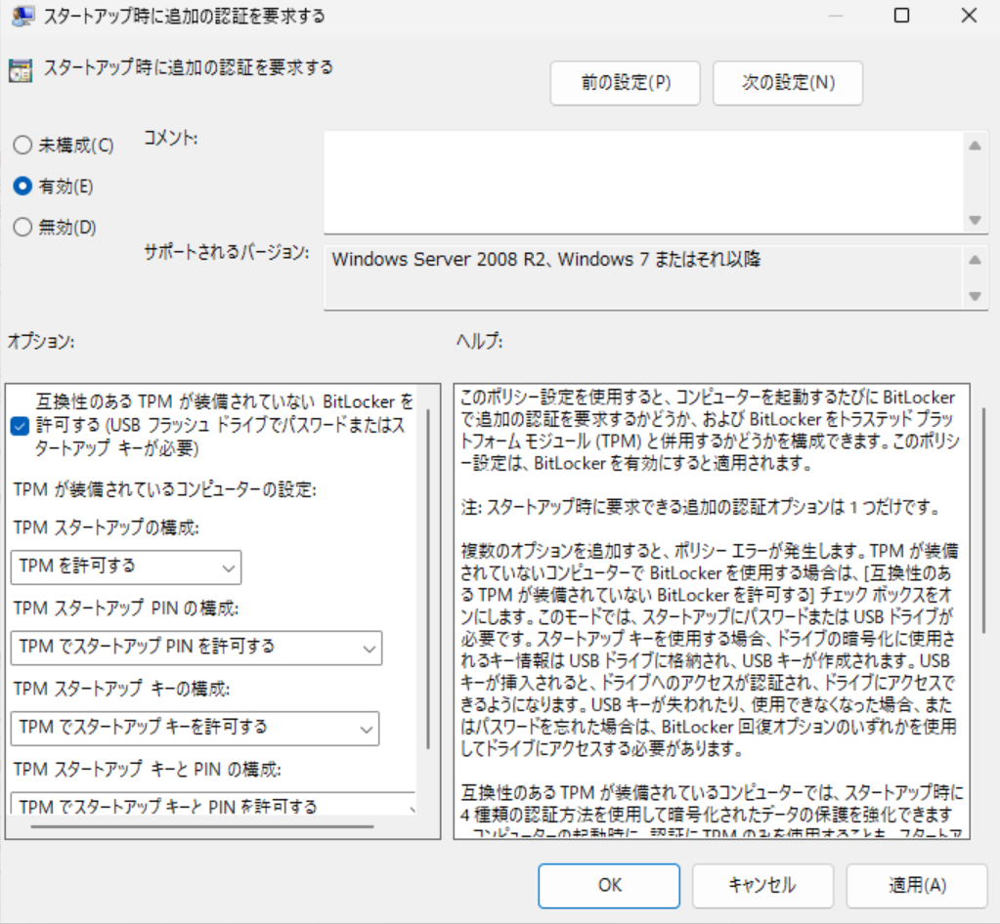
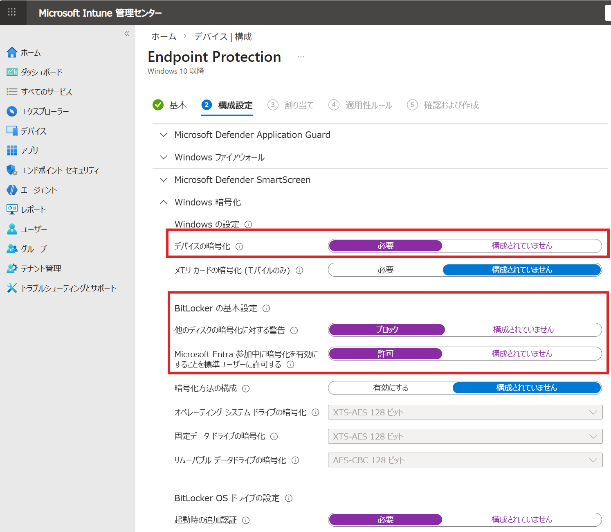
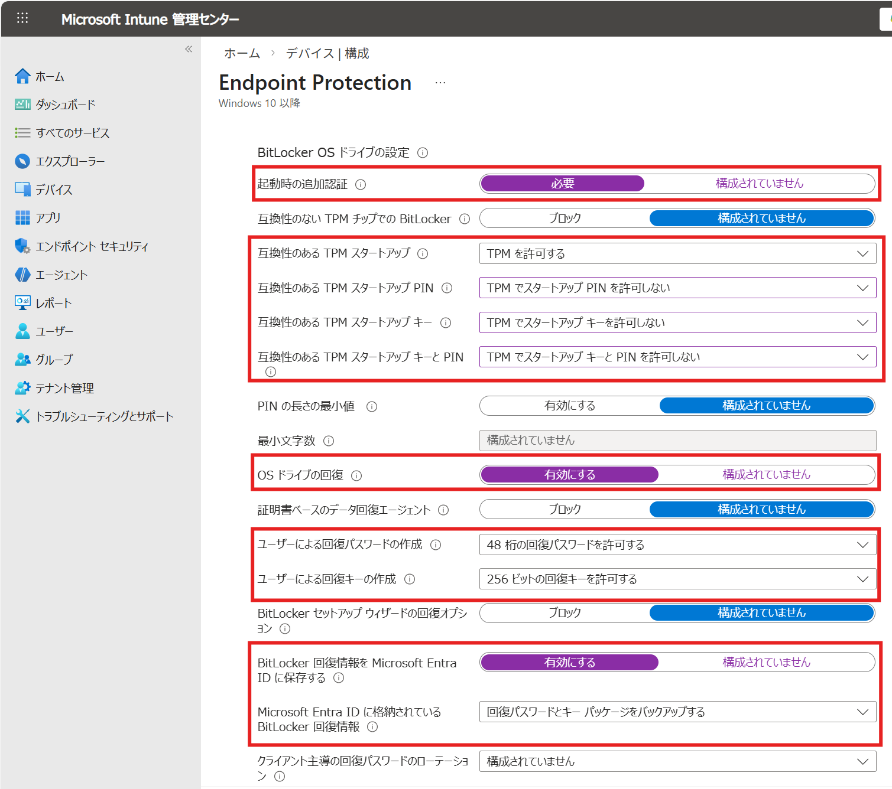
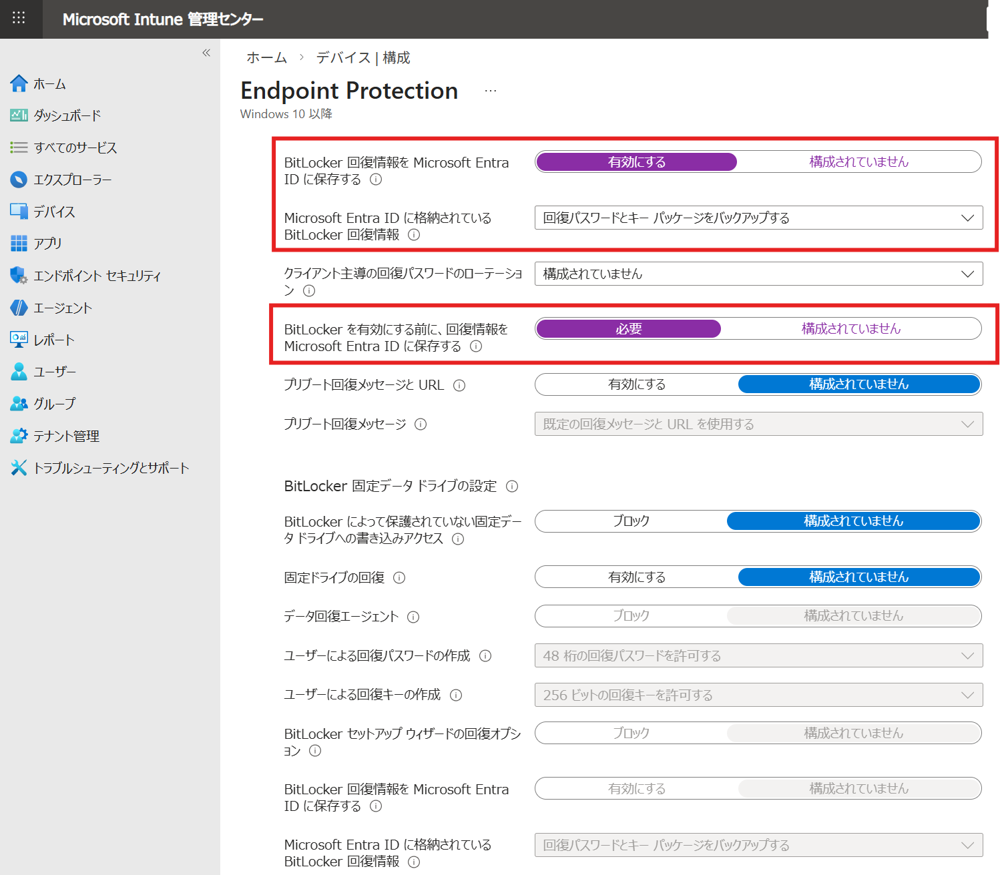
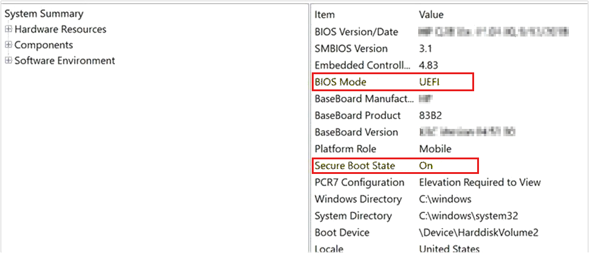
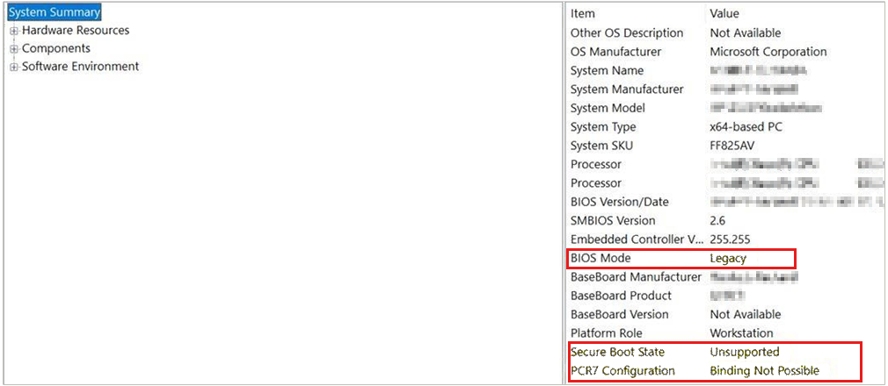

※本記事はマイクロソフト社員によって公開されております。
みなさま、こんにちは。Windows サポート チーム 郭です。
以下の公開情報では、BitLocker 機能に関するよくあるお問い合わせを紹介しています。
URL: https://learn.microsoft.com/en-us/windows/security/operating-system-security/data-protection/bitlocker/faq
本ブログ記事では、公開情報には含まれていないものの、企業の IT 管理者様から特に多く寄せられる BitLocker の実際の運用に関する質問をご紹介いたします。BitLocker の運用にあたり、少しでも参考になれば幸いです。
目次
BitLocker 運用方法・設定関連
-複数端末に対して、一意の PIN を設定して有効化する機能はありますか。
-Intune でサイレント暗号化を設定したいですが、構成プロファイルの推奨設定値はありますか。
-Hybrid Entra 参加の環境で、回復キーは Entra ID（またはオンプレミス）に固定して保存するように指定できますか。
-サイレント暗号化を設定したが、開始されません。どこを確認すればよいですか。
-複数の端末に対して、一括でオンプレミス AD または Entra ID へバックアップできますか。
-BitLocker を運用するにはどんなライセンスが必要ですか。
BitLocker 回復キー関連
-回復キーはどこから確認できますか。
-回復キーを紛失してしまったが、Microsoft に確認することで復旧はできますか。
-Hybrid Entra 参加の環境ですが、回復キーはオンプレミス環境、Entra ID のどちらに保存されますか。
複数端末に対して、一意の PIN を設定して有効化する機能はありますか。
セキュリティ観点において、一意の PIN を設定すると脆弱であるため、上記のシナリオを実現する既定の機能は BitLocker 側に特に用意がなく、各端末側で PIN つきで BitLocker を有効にする必要があります。
その際に、以下のコマンドを実行することで、一意の PIN を作成し、BitLocker を有効にすることが可能ですので、サンプルとしてご参考ください。
1 | Add-BitLockerKeyProtector -MountPoint C: -RecoveryPasswordProtector |
回復キーはどこから確認できますか。
回復キーは BitLocker 有効化する際に、設定によって保存先が異なることがございますが、主な保存先での確認方法は以下の公開情報に記載されておりますので、ご参考ください。
タイトル：BitLocker 回復キーを見つける
URL: https://support.microsoft.com/ja-jp/windows/6b71ad27-0b89-ea08-f143-056f5ab347d6
回復キーを紛失してしまったが、Microsoft に確認することで復旧はできますか。
弊社はお客様環境における回復キーを収集・管理していないため、残念ながら上記の場合は、弊社でも回復キーを突破する手段をご提供できかねます。
回復キーは複数の場所に保存できますので、まずは 回復キーはどこから確認できますか。 で該当するすべての保存先をご確認ください。
また、Bitlocker を運用・管理するうえで、回復キーは非常に大事なものですので、定期的なバックアップを実施するようお願いいたします。
コマンドでのバックアップ方法に関しては、後述する BackuptoAAD-BitLockerKeyProtector/Backup-BitLockerKeyProtector コマンドをご参考ください。
Hybrid Entra 参加の環境ですが、回復キーはオンプレミス環境、Entra ID のどちらに保存されますか。
結論：どちらか片方、またはその両方へバックアップされる可能性があります。
回復キーの保存は、Bitlocker 有効化時またはドメイン参加・Entra 参加時に、一度のみ行われる処理となります。
Hybrid Entra 参加の際に、オンプレミス AD と Entra ID の両方へ試みる動作となりますが、どちらかあるいはその両方への保存が正常に完了すれば、回復キーの保存処理も正常完了とみなされます。そのため、何等かのネットワーク通信不良で、片方のみ通信可能な環境では片方しか回復キーが保存されていない場合があります。
Hybrid Entra 参加の環境で、回復キーは Entra ID（またはオンプレミス）に固定して保存するように指定できますか。
回復キーの保存先を指定することが出来ないため、既定の動作では上記の指定ができません。
一方、後述する BackuptoAAD-BitLockerKeyProtector/Backup-BitLockerKeyProtector コマンド に記載のコマンドを定期的に実行することで、指定する保存先へ明示的にバックアップすることが可能です。
複数の端末に対して、一括でオンプレミス AD または Entra ID へバックアップできますか。
Bitlocker 既定の機能としては特に用意されていませんが、以下の PowerShell コマンドをスクリプト化し、複数の端末へ配布することによって、実現することが可能です。
タイトル：回復パスワードをリセットしてバックアップする
URL: https://learn.microsoft.com/ja-jp/windows/security/operating-system-security/data-protection/bitlocker/operations-guide?tabs=powershell#reset-and-backup-a-recovery-password
※ 上記の記事では、使用済みの回復キーを削除し、新たに回復キーを生成したうえ、Entra ID または オンプレミス AD へ保存する流れですが、削除・再作成する必要がなければ、以下のコマンドレットのみ実行すれば、該当する保存先にバックアップ可能です。
1 | BackuptoAAD-BitLockerKeyProtector -MountPoint $env:SystemDrive -KeyProtectorId "{ID}" |
補足
上記の “{ID}” は以下のコマンドで取得した “KeyProtectorId” に置き換えます。
1 | (Get-BitLockerVolume -mountpoint $env:SystemDrive).KeyProtector | where-object {$_.KeyProtectorType -eq 'RecoveryPassword'} | ft KeyProtectorId,RecoveryPassword |
Bitlocker 関連の GPO / 構成プロファイルを設定して、端末側で Bitlocker を有効にしましたが、以下のエラーになりました。
エラー メッセージ：BitLocker スタートアップ オプションのグループポリシー設定は競合しているため、適用できません。詳細については、システム管理者に問い合わせてください。

TPM が搭載されている PC に対して、以下の BitLocker スタートアップ オプションが用意されています。
・TPM スタートアップ の構成
・TPM スタートアップ PIN の構成
・TPM スタートアップ キー の構成
・TPM スタートアップ キーと PIN の構成

それぞれのオプションには、以下の指定方法が用意されています。
・許可する
・要求する
・許可しない
ただし、「要求する」と指定できるものは 1 つのみとなっており、ほかに「要求する」または「許可する」が同時に存在する場合は、上記のエラーとなります。従いまして、「要求する」と指定した項目以外は、すべて「許可しない」と指定してください。
補足：BitLocker を有効にする際のみではなく、解除するときも上記のチェックが実施されるため、その際に、競合となるグループポリシーが検知されたら、同様にエラーとなりますので、ご留意ください。
Intune でサイレント暗号化を設定したいですが、構成プロファイルの推奨設定値はありますか。
多くの企業様では、サイレント暗号化をしつつ、回復キーを Entra ID に保存する運用をされております。
その際に、サイレント暗号化の必須設定に加え、回復キーの作成を許可し、そのバックアップが正常に Entra ID に保存されてから、暗号化を開始する設定をご案内しております。
Intune の構成プロファイル一式を以下に記載しますので、ご参考ください。
（本記事掲載時点の画面表示となりますので、今後画面やレイアウトが変更される場合がございます）
構成
-> ポリシー
-> 新しいポリシー
-> プラットフォーム：Windows 10 以降。プロファイルの種類：テンプレート
-> Endpoint Protection



Intune から一意の PIN をつけて、サイレント暗号化をかけることが可能ですか。
サイレント暗号化では、TPM スタートアップの構成のみサポートされているため、TPM スタートアップ PIN の構成を要求する場合は、サイレント暗号化は動作しなくなります。
そのため、PIN つきでサイレント暗号化をかけることができません。
サイレント暗号化を設定したが、開始されません。どこを確認すればよいですか。
弊社の過去事例において、以下の場合、サイレント暗号化が開始されないことがありますので、該当しないかご確認ください。
(1) Intune からサイレント暗号化の設定を配布していない
サイレント暗号化として推奨される設定について、(Intune でサイレント暗号化を設定したいですが、推奨の設定はありますか。) をご確認ください。
(2) BitLocker Drive Encryption Service （BDESVC）サービスが無効になっている
解決方法：BitLocker Drive Encryption Service （BDESVC）サービスのスタートアップ種類を手動に変更する
コマンド：
1 | sc.exe config BDESVC start= demand |
(3) BitLocker MDM policy Refresh タスクが無効になっている、あるいは、削除されている
(4) セキュアブート機能が対応されていない、または、UEFI モードになっていない
確認方法：
セキュリティで保護されたブート状態を確認するには、System Information アプリケーションを使用します。 これを行うには、次の手順を実行します。
[スタート] を選択し、[検索] ボックスに「msinfo32」と入力します。
次のように、[ セキュア ブート状態] 設定が [オン] になっていることを確認します。

セキュア ブート状態の設定がサポートされていない場合は、このデバイスで サイレント暗号化を使用することはできません。

(5) WinRE （回復環境）が無効になっている
確認方法：
管理者権限で以下のコマンドを実行し、”Windows RE の状態:” が “Enabled” になっているか確認します。
1 | reagentc /info |
回復環境の有効化：
管理者権限で以下のコマンドを実行します。（何等か環境固有の理由でエラーとなった場合は、回復環境有効化のトラブルシューティングが必要です）
1 | reagentc /enable |
BitLocker を運用するにはどんなライセンスが必要ですか。
端末側で BitLocker を有効にするには、Windows Pro / Enterprise / Pro Education / SE / Education のエディションが必要です。また、Intune で BitLocker CSP または構成プロファイルを配布して、BitLocker を管理する場合、Windows Enterprise E3/E5, Windows Education A3/A5 のライセンスが必要です。
タイトル：Windows エディションとライセンスに関する要件
URL: https://learn.microsoft.com/ja-jp/windows/security/operating-system-security/data-protection/bitlocker/configure?tabs=common#windows-edition-and-licensing-requirements
[特記事項]
本情報の内容（添付文書、リンク先などを含む）は、作成日時点でのものであり、予告なく変更される場合があります。